Music
From a young age, I showed a inclination for music. I started piano lessons at age 4, and ever since music has been a huge part of my life. I quickly grew a taste for other genres, and have since created my own musical aesthetic, combining the subtle, dramatic and moving sound of classical music with the melodic catharsis and power of punk, rock and metal music.
I started singing in 2015, bass in 2019 and guitar in 2021. The saying is true - once you’ve learned piano, you can learn any instrument. My musical background has afforded me a lifelong hobby and occupation. For that, I’m incredibly fortunate and very grateful.
I started my band, Off By One, in 2021 when we covered Sum 41’s iconic ballad, Pieces. We established our distinct cozy indie sound and have expanded into countless genres since.
 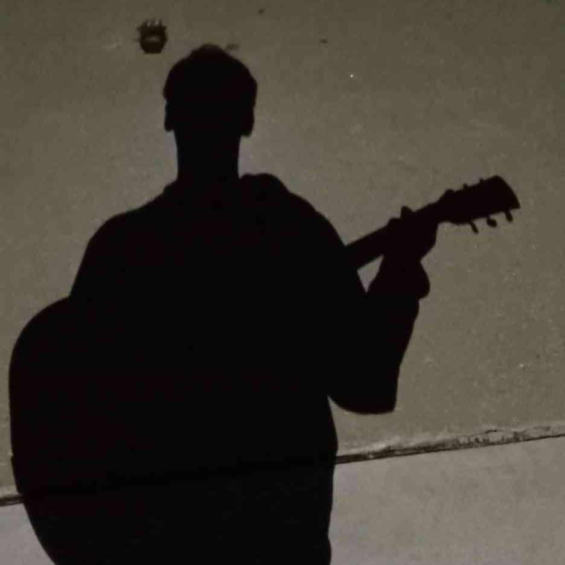
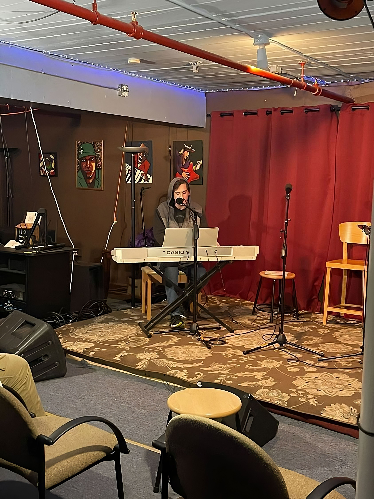
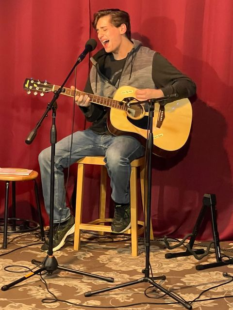
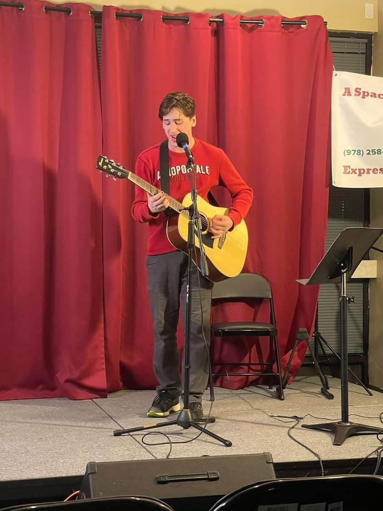
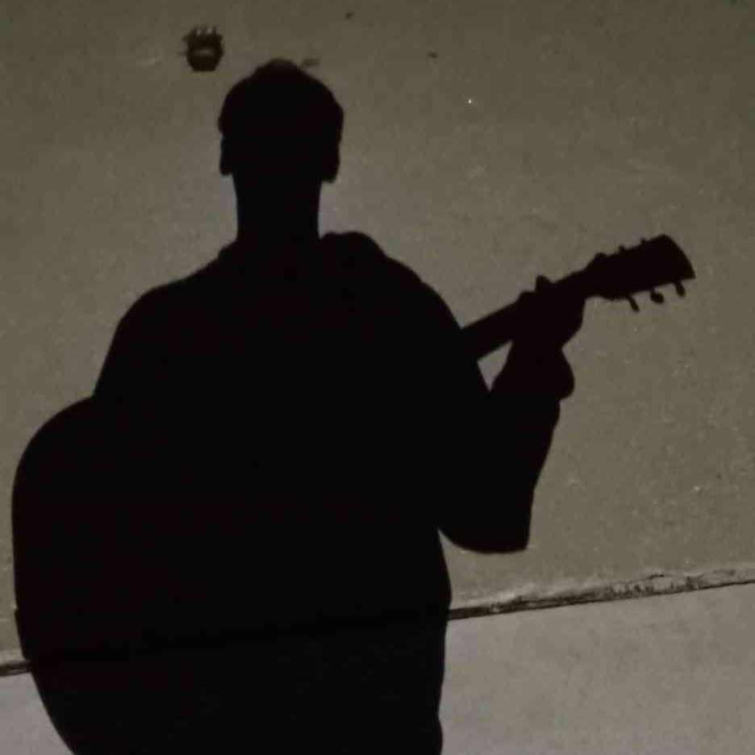
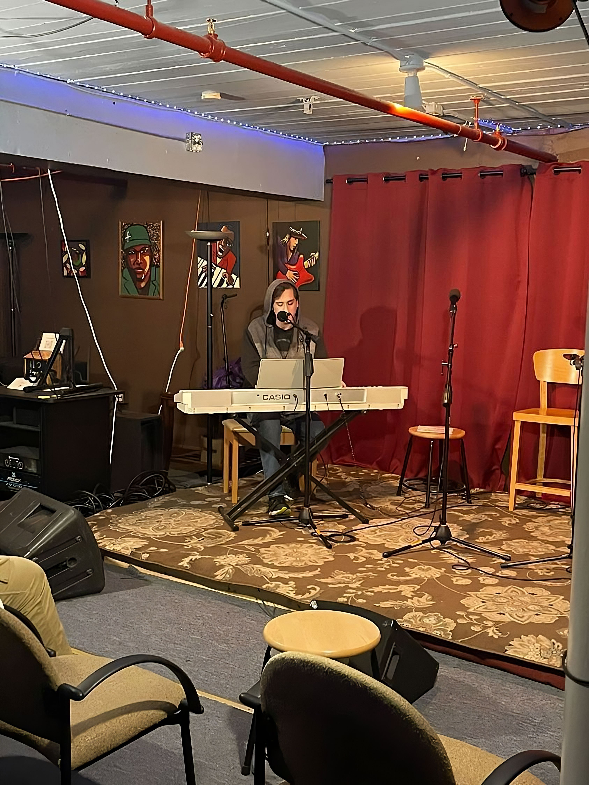
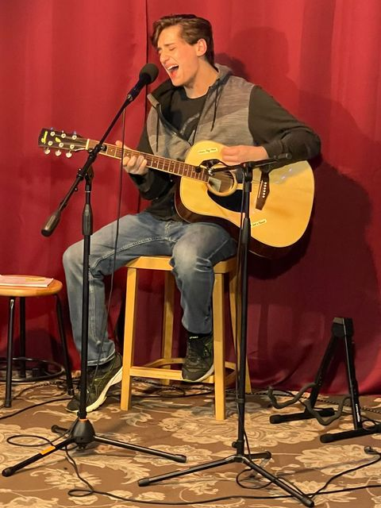
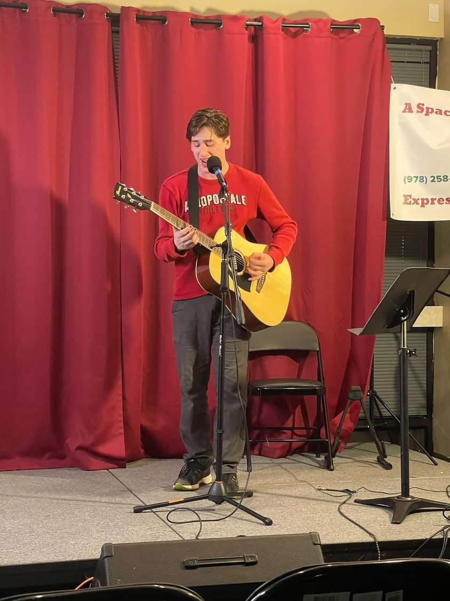
 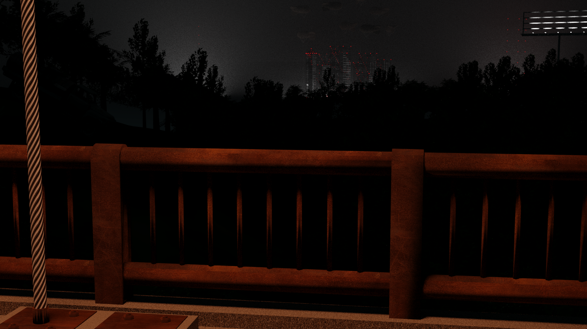
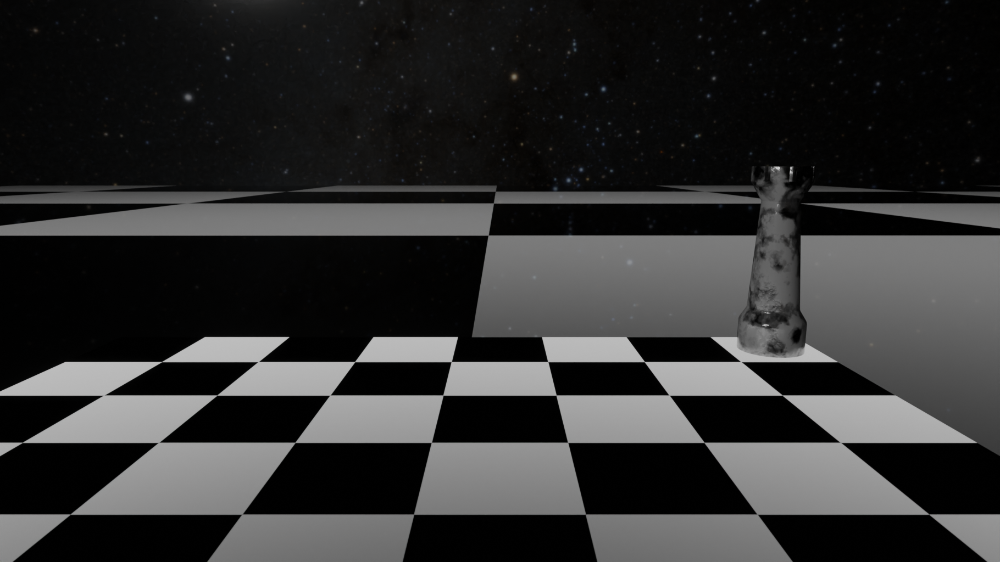
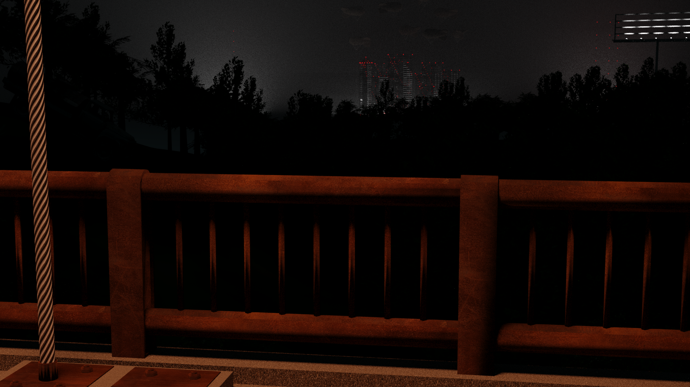
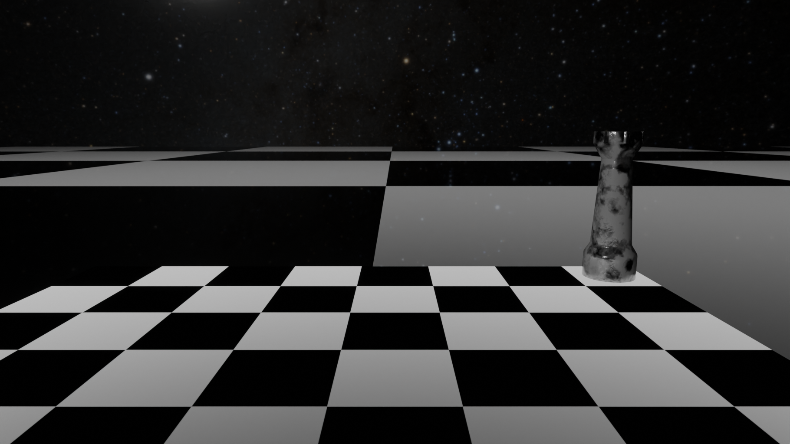
 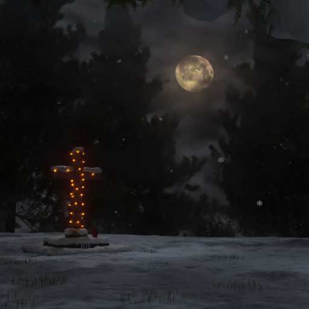
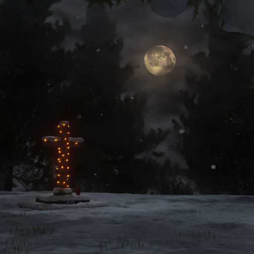